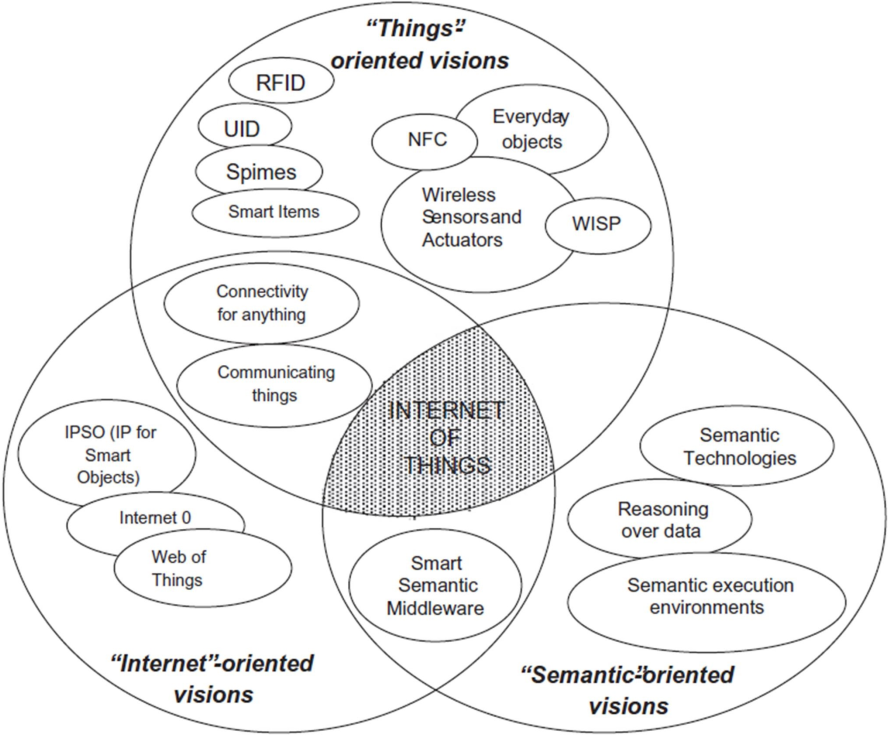
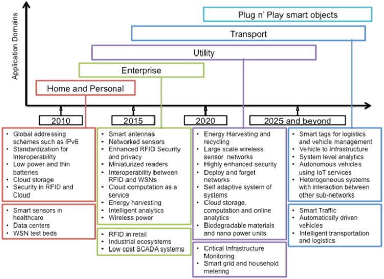

IOT vision
The IoT includes many objects (preferably smart
objects) connected and communicating
effectively with people on the Internet to help
solve the problems of the world
The end goal is to have plug-n-play smart objects that can be deployed in any environment with an interoperable interconnection backbone that allows them to blend with other smart objects around them. Standardization of frequency bands and protocols plays a pivotal role in accomplishing this goal.

IoT Today
- Telecom Operators
-
Consider M2M and IoT major business focus
- Device manufacturers
-
Consider wearables a new product segment
-
R&I communit
-
Invest in studying embedded and cyber-physical systems, network
technologies, semantic interoperability, operating systems,
security, cloud computing, future internet, big data and robotics
technology drivers and key application
A roadmap of key developments in IoT research, which includes the technology drivers and key application outcomes expected in the next decade, is shown below:

IoT Challenges

IoT Tomorrow
-
Extend the current IoT into dynamically configured web
of platforms for connected devices, objects, smart
environments, services and persons
-
Overcome the fragmentation of vertically-oriented closed
systems, architectures and applications
IoT Infrastructure Main Components